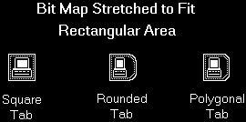

If this message is sent for a page having both major and minor tab attributes, the notebook sets both the major and minor tab bit maps.
When displayed, the bit map is stretched to fit the size of the tab. If a tab has rounded or polygonal edges, the bit map is sized to fit the rectangular area of the tab, as shown in the following picture.